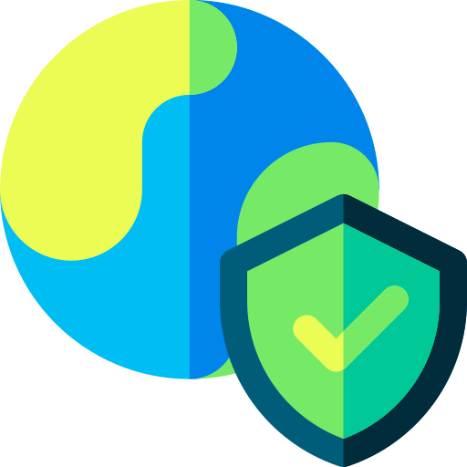
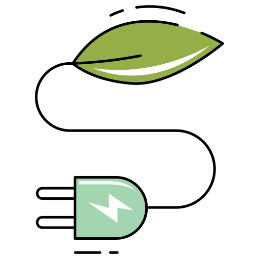
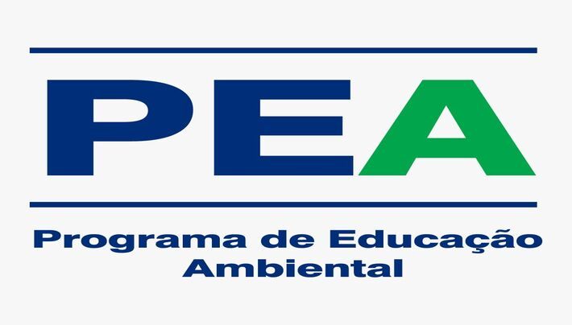

Temos objetivo de conscientizar a população, diminuição o desperdicio de recursos naturais, reduzindo o impacto humano a terra e com essa ferramenta, buscamos mobilizar e incentivar as pessoas a repensar hábitos de consumo e a adotar práticas mais sustentáveis

Importância
Nossa Pegada Ecológica é uma ferramenta importante para trabalhar as questões ambientais, por meio da análise do consumo e de seus impactos sobre os recursos ambientais. Ela também traz informações importantes que possibilitam direcionar políticas públicas municipais, estaduais e federais.

Energias Limpas
Nossa preocupação com a preservação do ambiente, nos posiciona em um roll de defensores dos usos da energia limpa devido a crise de energias esgotáveis.
As Energias limpas possui uma diferença entre a erergia renovável, onde exclui qualquer tipo de poluição que venha causar mudanças climáticas com o decorrer do tempo.
Reciclagem
Com o objetivo de minimizar o impacto ambiental é muito importante reciclar , reduzir e reutilizar. Além de economizar a extração de matéria prima da natureza, evitamos o desperdício dos recursos
naturais.
NOSSA EQUIPE
Todos que participaram deste projeto

Programa Educação Ambiental
Colaboradores
O Programa de Educação Ambiental - PEA tem o objetivo de propor ações de educação ambiental junto à população moradora da área de influência do empreendimento, visando aumentar o nível de conhecimento e proteção ambiental de ecossistemas regionais, assim como maximizar os benefícios socioambientais necessários à conservação, proteção e preservação ambiental.
Fundação CSN
Cordenadores
Batizada em 1961 como Fundação General Edmundo de Macedo Soares e Silva, tendo sua primeira sede em Congonhas (MG) e atuação voltada para educação e capacitação profissional, foi a partir da mudança para Volta Redonda (RJ), em 1991, que a ampliamos nossa atuação, abrangendo áreas como esporte, saúde e cultura.
Escola Técnica Pandiá Calógeras
Desenvolvedores
A Escola Técnica Pandiá Calógeras — ETPC, fundada em 19 de abril de 1944 com a intenção de oferecer ensino técnico aos primeiros empregados da Companhia Siderúrgica Nacional e aos seus filhos, é referência nacional em educação para o trabalho, pela excelência de seu processo ensino-aprendizagem, atualização tecnológica e investimento social.